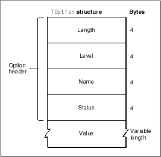
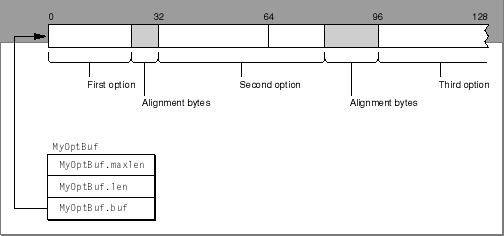

About Options and Option Negotiation
For every endpoint, Open Transport maintains an options buffer. When you create an endpoint provider, Open Transport fills this buffer with a default value for each option supported for the endpoint. Option values have meaning for and are defined by the protocol to which they apply. Typically, Open Transport uses endpoint options to control aspects of the endpoint's operation. For example, if a protocol guarantees reliable delivery of data, the protocol might define an option that specifies the number of times a send operation is retried before the send fails and an error message is generated. Protocol implementations provide default values for options to ensure maximum portability for your application across protocol families.In writing a networking application, you can use an endpoint provider's default option values or you can replace these with other values to control the behavior of an endpoint. Option negotiation describes the process that results when you decide to replace default values with option values that you choose. A successful negotiation results in your obtaining exactly the option values you requested, a partly successful negotiation results in your getting different values for the options you requested, and a failed negotiation results in your not being able to change existing values at all.
Depending on the option you want to modify, a negotiation might involve a client and its endpoint provider, or it might involve both a local and remote client and their endpoint providers. In either case, it's important to keep in mind that the process is a negotiation--that is, before you can change the characteristics of an endpoint or change the way in which it transfers data or establishes a connection, an agreement has to be reached. If you cannot reach this agreement, the operation you are attempting to complete could fail. In this case, you might have to find a way of implementing the service you need other than through the use of options.
Explicit Use of Options and Portability of Code
The goal of the Open Transport architecture is to enable networking applications to migrate across protocol families and system platforms with little or no change to code. However, the price of transport independence or, ideally, transport transparency is that an application must be ready to forego features that are unique to a specific protocol in order to work equally well with protocols offering a similar type of service, such as connection-oriented transactionless service or connectionless transaction-based service. Because options are often coupled with a particular protocol or protocol family, making explicit use of options degrades portability across protocol families. Similarly, different system platforms might offer different option support for the same protocols due to different implementations. Thus, making use of options can also endanger portability across different system platforms.Note, however, that protocols are not necessarily interchangeable and that you might very reasonably want to take advantage of a protocol feature that is only available through the use of options. If this is the case, you need to become familiar with the material presented in the following sections, which describe the Open Transport rules for option management and negotiation.
Types of Options
The process of option negotiation is affected by the type of option involved. Options can be association-related, privileged, read-only, or absolute. For more information about these distinction and how they affect option negotiation, see "XTI Option Summary".The Format of Option Information
An option has a name and a value, it is defined for a specific protocol, and it takes up a certain amount of room in memory. TheTOptionstructure used to define an option contains fields for each of these characteristics. As Figure 7-1 shows, an option is described by an option header and a value.Figure 7-1 The format of option information

The option header is the same for all options. It contains four fields that specify:
The length and format of data in the value field depend on the option
- The length of the entire structure. The length includes the length of
the option header and the length of the value field; it does not include
added padding.- The protocol (level) for which the option applies. It is possible to set an option for any protocol that is part of an endpoint provider's configuration. For example, if you open an AppleTalk Transaction Protocol (ATP) endpoint, it is possible to set an option at the Datagram Delivery Protocol (DDP) level by specifying DDP for the
levelfield.- The name of the option. Each protocol implementation defines the names of options it supports.
- The status of the option. The endpoint provider fills in this field to indicate the outcome of the option negotiation.
being defined.You store option information for an endpoint in a buffer containing one or more
TOptionstructures. ATNetbufstructure describes the buffer. Figure 7-2 shows aTNetbufstructure,MyOptBuf, that describes an options buffer containing three options. The fieldMyOptBuf.bufpoints to the buffer; the fieldMyOptBuf.lenspecifies the actual length of the buffer.
You can concatenate several
TOptionstructures in a buffer, as shown in Figure 7-2, provided you observe the following rules:
TOptionstructures must be quad-byte aligned within the buffer.- If you are using the
OTOptionManagementfunction to set or verify option values, all options in the buffer must be for the same protocol. That is, the value of thelevelfield must be the same. When used with any other function, the options buffer can contain options set for different protocols.XTI-Level Options and General Options
In addition to options defined for specific protocols, Open Transport defines options called XTI-level options that are not specific to a particular endpoint. Some of these options are absolute requirements, which means that whatever protocol you are using must support these options. You need to consult the documentation for your protocol to determine the meaning of the option for your endpoint and for additional information about default values and ranges or valid values supported for the option. Table 7-1 provides a brief summary of XTI-level options. For more detailed information about these options, see "XTI-Level Options".Table 7-1 XTI-level options
In addition to the XTI-level options, Open Transport defines the set of generic options listed in Table 7-2. None of these options are absolute requirements. This means that if an Open Transport protocol supports the functionality of one of these options, it should use this option to do it. For additional information about generic options, see "Generic Options".
Table 7-2 Open Transport generic options
Subtopics
- Explicit Use of Options and Portability of Code
- Types of Options
- The Format of Option Information
- XTI-Level Options and General Options